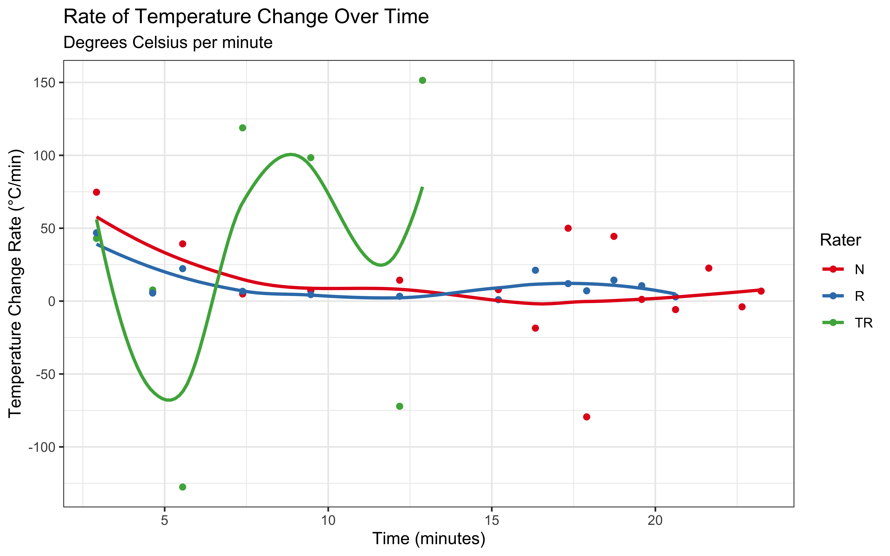

Advanced Cognitive Modeling Notes
2022-02-04
Chapter 1 Inferring rates
We start our adventures in Stan with the simplest possible model. After observing the behavior of a Matching Pennies player a certain amount of trials n Given a certain amount of trials n, we observe a certain amount of successes k. E.g. imagine testing your professor with a series of yees/no questions to assess their ability in cognitive modeling. The amount of questions is n, the amount of correct answers is k. Yet, we are not really interested in k. We are interested in the underlying ability of the professor to answer this kind of questions, as a proxy for their knowledge/skills in this domain. This underlying unobserved variable is the rate or theta. Theta is of interest because it goes beyond the observed data and allows us to predict, e.g. how many answers would be correct in a new assessment of the professor with a different amount of questions. Analogously, theta allows us to compare this professor’s skills with another one’s skills even if they answer a different amount of questions.
The exercises present 3 modeling issues: 1. Inferring the posterior distribution of a rate θ after having observed k successes from n trials. 2. Inferring the posterior distribution of the difference between two rates (θ1 and θ2) after having observed two different processes, producing k1 and k2 successes out of n1 and n2 trials, respectively. 3. Inferring the posterior distribution of a rate θ after having observed two instances of the rate in action: two binary processes, producing k1 and k2 successes out of n1 and n2 trials, respectively.
For each of these exercises, I’ll first generate the data, then setup the model, then add the code necessary to do proper quality checks of the model: prior predictive checks, posterior predictive checks, prior/posterior update checks.
First we want to generate the data. Note that usually we would want to set a fixed theta, then generate the predicted k successes given n trials, since that’d allow to see how well the model recovers the underlying theta. But for now we follow the book.
# underlying rate
theta <- 0.6
# amount of trials
n <- 10
# generating successes (nb the book would say 7)
k <- rbinom(1, size = n, prob = theta)
## Create the data
data <- list(
n = n,
k = k
)Second we want to define a basic rate inferring model. A stan program is composed (in its minimal form) by 3 blocks: data, parameters and model.
data identifies the variables that are passed to the model and defines their type (e.g. whether they are real or integer numbers) and whether they are bounded (e.g. cannot be below 0). Here it’s easy, we have 2 variables that we are observing: the number of trials (n) and the number of success (k). Both are integers, we need to observe at least 1 trial, or there’s no data (n>0) and there cannot be a negative number of successes (k>=0).
parameters identifies the parameters that need to be inferred thorugh the model. In this case, we only have one parameter: rate, which is bound between 0 (never successes) and 1 (always successes).
model includes two parts: the priors for each of the parameters and the likelihood formula(s). Here, again, we have the prior for our one parameter theta and the likelihood stating that k is generated according to a binomial distribution with a number of trial n and a rate theta.
library(cmdstanr)## This is cmdstanr version 0.4.0.9001## - CmdStanR documentation and vignettes: mc-stan.org/cmdstanr## - CmdStan path: /Users/au209589/.cmdstan/cmdstan-2.28.2## - CmdStan version: 2.28.2stan_file <- write_stan_file("
// This Stan model infers a rate (theta) from a number of trials (n) and successes (k)
// The input data is two integer numbers: n and k.
data {
int<lower=1> n; // n of trials (there has to be at least 1 to have observable data)
int<lower=0> k; // n of successes (lowest n is no successes)
}
// The parameters accepted by the model. Our model accepts only theta, the rate,
// which is bound at 0 (no chances of success) and 1 (always success)
parameters {
real<lower=0, upper=1> theta;
}
// The model to be estimated; prior and likelihood
model {
// The prior for theta is a uniform distribution between 0 and 1
theta ~ beta(1, 1);
// The model consists in a binomial distribution with a rate theta,
// and a number of trials n generating k successes
k ~ binomial(n, theta);
}
")Then we fit the model and assess the estimates: do they capture the simulated values?
mod <- cmdstan_model(stan_file, cpp_options = list(stan_threads = TRUE), pedantic = TRUE)##
-
\
|
/
-
\
|
/
-
\
|
/
-
\
|
/
-
\
|
/
-
\
|
/
-
\
|
/
-
\
|
/
-
\
|
/
-
\
|
/
-
\
|
/
-
\
|
/
-
\
|
/
-
\
|
/
-
\
|
/
samples <- mod$sample(
data = data,
seed = 123,
chains = 2,
parallel_chains = 2,
threads_per_chain = 2,
iter_warmup = 2000,
iter_sampling = 2000,
refresh = 500,
max_treedepth = 20,
adapt_delta = 0.99,
)## Running MCMC with 2 parallel chains, with 2 thread(s) per chain...
##
## Chain 1 Iteration: 1 / 4000 [ 0%] (Warmup)
## Chain 1 Iteration: 500 / 4000 [ 12%] (Warmup)
## Chain 1 Iteration: 1000 / 4000 [ 25%] (Warmup)
## Chain 1 Iteration: 1500 / 4000 [ 37%] (Warmup)
## Chain 1 Iteration: 2000 / 4000 [ 50%] (Warmup)
## Chain 1 Iteration: 2001 / 4000 [ 50%] (Sampling)
## Chain 1 Iteration: 2500 / 4000 [ 62%] (Sampling)
## Chain 1 Iteration: 3000 / 4000 [ 75%] (Sampling)
## Chain 1 Iteration: 3500 / 4000 [ 87%] (Sampling)
## Chain 1 Iteration: 4000 / 4000 [100%] (Sampling)
## Chain 2 Iteration: 1 / 4000 [ 0%] (Warmup)
## Chain 2 Iteration: 500 / 4000 [ 12%] (Warmup)
## Chain 2 Iteration: 1000 / 4000 [ 25%] (Warmup)
## Chain 2 Iteration: 1500 / 4000 [ 37%] (Warmup)
## Chain 2 Iteration: 2000 / 4000 [ 50%] (Warmup)
## Chain 2 Iteration: 2001 / 4000 [ 50%] (Sampling)
## Chain 2 Iteration: 2500 / 4000 [ 62%] (Sampling)
## Chain 2 Iteration: 3000 / 4000 [ 75%] (Sampling)
## Chain 2 Iteration: 3500 / 4000 [ 87%] (Sampling)
## Chain 2 Iteration: 4000 / 4000 [100%] (Sampling)
## Chain 1 finished in 0.0 seconds.
## Chain 2 finished in 0.0 seconds.
##
## Both chains finished successfully.
## Mean chain execution time: 0.0 seconds.
## Total execution time: 0.3 seconds.samples## variable mean median sd mad q5 q95 rhat ess_bulk ess_tail
## lp__ -8.84 -8.56 0.73 0.32 -10.35 -8.32 1.00 1404 1195
## theta 0.51 0.51 0.14 0.15 0.28 0.74 1.00 888 1069As you know from the Bayesian workflow discussion [MISSING], there is a lot of model checking that we should do. We haven’t assessed our priors, nor the model posteriors against priors and against data, nor the quality of the model fitting process.
Here is a reminder of what we need to do: * plot our priors and the predicted outcome based on prior modeling only (no fitting on data), that is performing prior predictive checks * assess the fitting process: diagnostics and traceplots/rankplots * plot our predicted outcomes based on the fitted model (posterior predictive checks) * plot our posteriors overlayed on the priors
Some of this, in particular, point 1, could/should be run before fitting the model. However, it’s very practical to get the model to do it all: sample from the priors and save those samples, while also fitting the model.
Let’s test things by hand, first. We first sample from the prior and visualize it
pacman::p_load(tidyverse)
prior <- tibble(prior=rbeta(1e4, 1, 1))
ggplot(prior, aes(prior)) + geom_density() + theme_classic()
Then we use the sampled prior to generate plausible outcomes.
pred_outcomes <- tibble(pred_outcomes=rbinom(1e4, 10, prior$prior))
ggplot(pred_outcomes, aes(pred_outcomes)) + geom_density() + theme_classic()
So these roughly tell us that we have no ideas as to the plausible rate (all values between 0 and 1 are equally plausible), and that gives us